UNIDAD 1 – EVALUACIÓN DEL DESEMPEÑO
Objetivo de la unidad
Al finalizar la unidad, el estudiante comprenderá la importancia de la evaluación del desempeño dentro de la gestión de Recursos Humanos, identificará sus principales métodos y analizará el proceso y la entrevista de evaluación.
¿QUÉ APRENDERÁ EL ESTUDIANTE?
Al finalizar la unidad, el estudiante será capaz de:
- Comprender la importancia de la evaluación del desempeño.
- Identificar los principales métodos de evaluación.
- Reconocer las etapas del proceso de evaluación del desempeño.
- Analizar la función de la entrevista de evaluación.
- Aplicar los conceptos estudiados a situaciones organizacionales.
TEMARIO DE LA UNIDAD 1
1. EVALUACIÓN DEL DESEMPEÑO
1.1 Definición y beneficios de la evaluación del desempeño.
1.2 Métodos de evaluación con base en el futuro
1.2.1 Escala de puntuación
1.2.2 Método de selección forzada
1.2.3 Método de registro de acontecimientos notables
1.2.4 Escala de Calificación conductual
1.2.5 Métodos de verificación de campo
1.2.6 Enfoque de evaluación comparativa
1.3 Métodos de evaluación con base en el futuro
1.3.1 Autoevaluación
1.3.2 APO
1.3.3 Evaluación psicológica
1.4 Proceso de calificación
1.5 Ascensos y promociones
1.6 Despidos
1.7 Recapacitación
1.8 Liquidaciones
1.9 Reubicación
1.1 Definición y beneficios de la evaluación del desempeño
1.1 Definición y beneficios de la evaluación del desempeño
¿Qué es la evaluación del desempeño?
La evaluación del desempeño es un proceso sistemático mediante el cual una organización analiza y valora la manera en que un trabajador realiza las funciones y responsabilidades correspondientes a su puesto.
Su finalidad es conocer en qué medida el desempeño del colaborador responde a los objetivos, criterios y expectativas establecidos por la organización.
La evaluación no debe entenderse únicamente como una forma de calificar al trabajador. También constituye una herramienta de gestión de Recursos Humanos, ya que permite obtener información para tomar decisiones relacionadas con capacitación, promociones, reconocimiento, desarrollo profesional y mejora del desempeño.
¿Por qué es importante?
La evaluación del desempeño permite comparar los resultados esperados con los resultados obtenidos por el trabajador. A partir de esta información, la organización puede identificar fortalezas, áreas de oportunidad y necesidades de mejora.
Además, facilita la comunicación entre el trabajador y su jefe inmediato, ya que proporciona una base para analizar el desempeño y establecer compromisos y objetivos futuros.
Principales objetivos
La evaluación del desempeño busca:
- Conocer el nivel de desempeño de los colaboradores.
- Identificar fortalezas y áreas de oportunidad.
- Detectar necesidades de capacitación.
- Proporcionar retroalimentación al trabajador.
- Apoyar decisiones relacionadas con promociones, ascensos o reubicaciones.
- Establecer acciones para mejorar el desempeño.
- Contribuir al cumplimiento de los objetivos de la organización.
Beneficios para la organización
Una evaluación correctamente aplicada permite contar con información para tomar mejores decisiones sobre el personal, detectar problemas de desempeño, identificar trabajadores con potencial y orientar los programas de capacitación y desarrollo.
También puede contribuir a mejorar la productividad y a establecer criterios más objetivos para determinadas decisiones de Recursos Humanos.
Beneficios para el trabajador
El colaborador puede conocer qué aspectos de su trabajo realiza adecuadamente y cuáles necesita mejorar. Asimismo, recibe retroalimentación sobre su desempeño y puede identificar oportunidades de capacitación y desarrollo profesional.
Ejemplo práctico
Una empresa evalúa cada seis meses a su personal del área de ventas considerando criterios como cumplimiento de metas, atención al cliente, trabajo en equipo, puntualidad y conocimiento del producto.
Al realizar la evaluación, se detecta que una colaboradora tiene excelentes resultados de ventas, pero necesita mejorar la atención al cliente.
En lugar de limitarse a asignarle una calificación baja en ese aspecto, la empresa establece un plan de capacitación en servicio al cliente y posteriormente revisa su avance.
En este caso, la evaluación del desempeño sirve para detectar una necesidad y generar una acción de mejora.
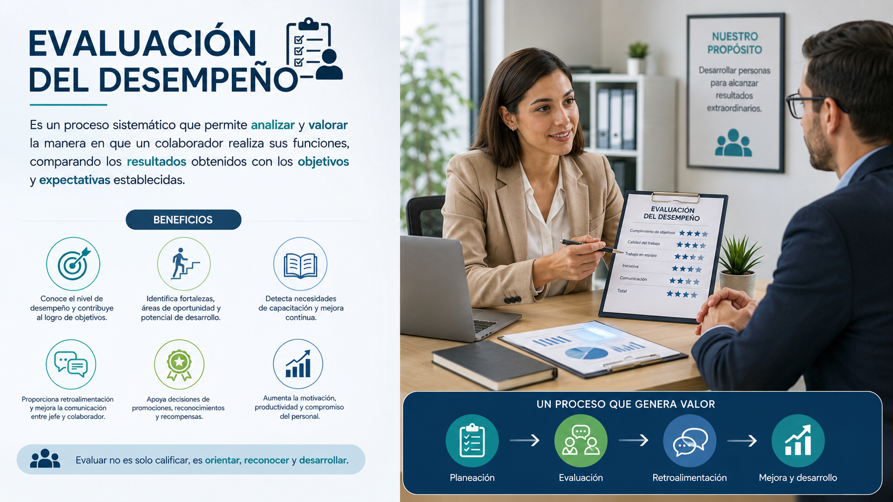
Reflexiona
¿Consideras que una evaluación del desempeño debe utilizarse principalmente para calificar al trabajador o para ayudarlo a mejorar? ¿Por qué?
1.2 Métodos de evaluación con base en el futuro
1.2 Métodos de evaluación con base en el futuro
¿Qué son los métodos de evaluación con base en el pasado?
Los métodos de evaluación con base en el pasado analizan el desempeño que el trabajador ha demostrado durante un periodo determinado. Se apoyan en conductas, resultados y acontecimientos que ya ocurrieron, por lo que permiten valorar cómo ha realizado sus funciones y responsabilidades.
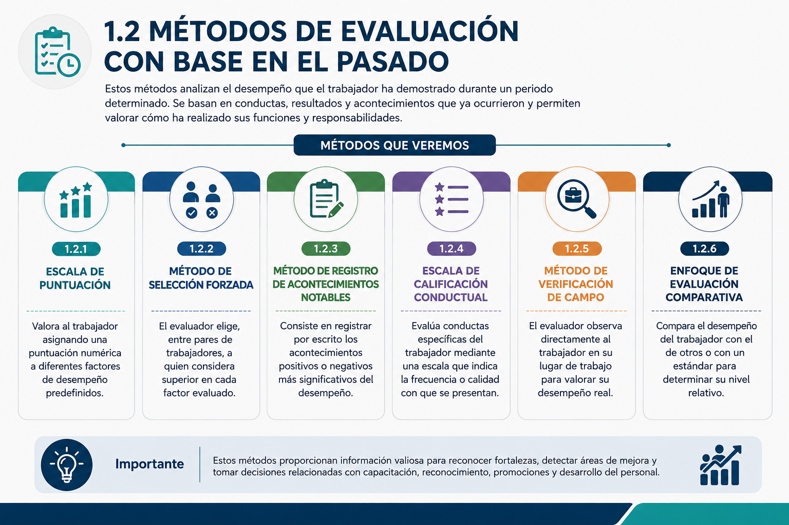
1.2.1 Escala de puntuación
1.2.1 Escala de puntuación
¿Qué es la escala de puntuación?
La escala de puntuación es un método de evaluación del desempeño que consiste en valorar al trabajador mediante una escala numérica o descriptiva aplicada a distintos factores previamente definidos.
El evaluador asigna una calificación a aspectos como puntualidad, calidad del trabajo, productividad, responsabilidad, trabajo en equipo, iniciativa o cumplimiento de objetivos.
¿Cómo funciona?
La organización establece los factores que desea evaluar y asigna a cada uno una escala de puntuación. Por ejemplo, puede utilizar una escala del 1 al 5, donde cada número representa un nivel de desempeño:
1 – Deficiente: El desempeño está muy por debajo de lo esperado.
2 – Necesita mejorar: Cumple parcialmente con lo requerido.
3 – Satisfactorio: Cumple adecuadamente con las expectativas del puesto.
4 – Muy bueno: Supera las expectativas en varios aspectos.
5 – Excelente: Presenta un desempeño sobresaliente y constante.
Por ejemplo, si se evalúa a un trabajador en puntualidad, calidad del trabajo, productividad, trabajo en equipo y responsabilidad, el evaluador asignará una puntuación del 1 al 5 en cada factor. Al finalizar, los resultados permiten identificar las fortalezas y las áreas que requieren mejora.
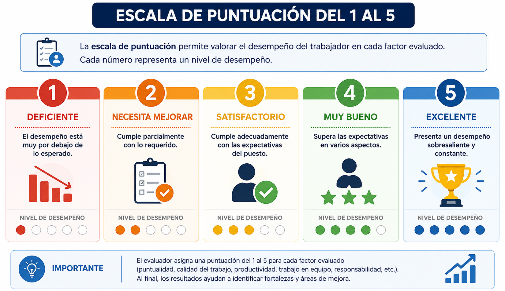
Ventajas
- Es sencilla de aplicar y comprender.
- Permite comparar el desempeño entre diferentes trabajadores.
- Facilita identificar fortalezas y áreas de mejora.
- Los resultados pueden analizarse cuantitativamente.
Desventajas
- La calificación puede verse influida por la percepción del evaluador.
- Una puntuación numérica no siempre explica las causas del desempeño.
- Si los criterios no están claramente definidos, puede existir subjetividad.
Ejemplo práctico
Una empresa evalúa a un colaborador utilizando una escala del 1 al 5:
Puntualidad: 5 | Calidad del trabajo: 4 | Productividad: 4 | Trabajo en equipo: 3 | Responsabilidad: 5
El resultado muestra un buen desempeño general; sin embargo, el trabajo en equipo representa un área de oportunidad. La evaluación permite detectar este aspecto y establecer acciones para mejorarlo.
Reflexiona:
¿Por qué una calificación de 3 no necesariamente significa que un trabajador tenga un mal desempeño?
1.2.2 Método de selección forzada
1.2.2 Método de selección forzada
El método de selección forzada es una técnica de evaluación del desempeño en la que el evaluador debe elegir, entre varias frases o descripciones previamente establecidas, aquellas que representan mejor el comportamiento y desempeño del trabajador.
A diferencia de la escala de puntuación, el evaluador no asigna directamente una calificación numérica, sino que selecciona la descripción que mejor representa la conducta observada. Esto ayuda a disminuir la subjetividad durante la evaluación.
¿Cómo funciona?
Se presentan al evaluador grupos de frases relacionadas con diferentes comportamientos laborales. De cada grupo debe seleccionar la opción que mejor describa al trabajador.
Por ejemplo:
Seleccione la frase que mejor describe al colaborador:
○ Cumple sus actividades únicamente cuando recibe supervisión.
○ Realiza sus actividades de manera responsable y constante.
○ Presenta dificultades frecuentes para cumplir sus tareas.
○ Supera regularmente los resultados esperados.
El evaluador debe elegir una de las opciones, de acuerdo con el comportamiento observado.
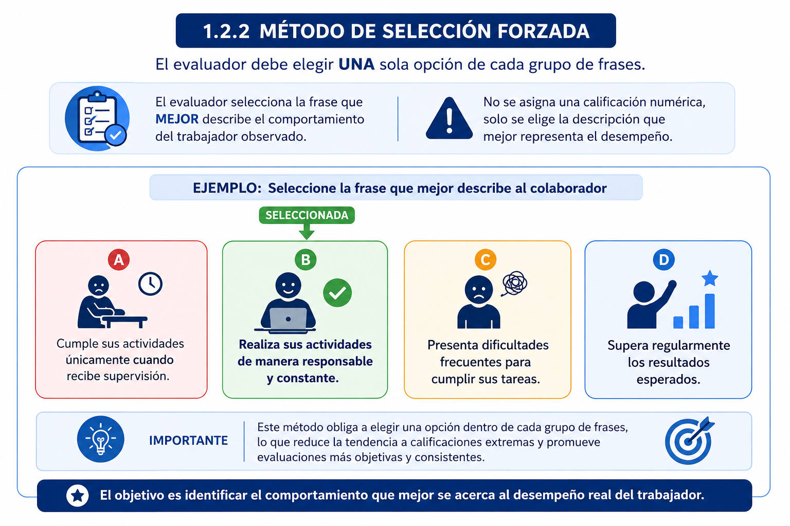
Ventajas
- Reduce algunos sesgos del evaluador.
- Evita que todas las personas sean calificadas de manera demasiado alta o demasiado baja.
- Obliga al evaluador a comparar distintas descripciones del comportamiento.
- Puede generar evaluaciones más objetivas cuando las frases están bien diseñadas.
Desventajas
- Su elaboración requiere tiempo y una adecuada selección de las frases.
- El evaluador tiene poca libertad para explicar situaciones particulares.
- Puede resultar difícil elegir cuando dos frases describen parcialmente al trabajador.
- Por sí solo, no proporciona información detallada sobre las causas del desempeño.
Reflexiona
¿Por qué crees que obligar al evaluador a elegir entre varias frases puede ayudar a disminuir la subjetividad?
1.2.3 Método de registro de acontecimientos notables
1.2.3 Método de registro de acontecimientos notables
¿Qué es el método de registro de acontecimientos notables?
El método de registro de acontecimientos notables es una técnica de evaluación del desempeño que consiste en registrar situaciones o comportamientos relevantes del trabajador que hayan tenido un efecto positivo o negativo en su desempeño.
El evaluador lleva un registro durante un periodo determinado y anota aquellos acontecimientos que destacan por ser especialmente satisfactorios o deficientes. De esta manera, la evaluación se basa en hechos y comportamientos observados, y no solamente en una impresión general del trabajador.
¿Cómo funciona?
Durante el periodo de evaluación, el supervisor observa el desempeño del trabajador y registra acontecimientos significativos, indicando qué ocurrió, cuándo sucedió y cuál fue su efecto.
Ejemplo práctico
Un supervisor registra los siguientes acontecimientos de una colaboradora:
Acontecimiento positivo:
Ante la ausencia inesperada de una compañera, reorganizó las actividades del equipo y logró entregar el trabajo en la fecha establecida.
Acontecimiento negativo:
No informó oportunamente sobre un retraso en una actividad, lo que ocasionó que otro departamento no pudiera continuar con su trabajo.
Al finalizar el periodo, estos registros permiten analizar el desempeño utilizando situaciones reales ocurridas durante el trabajo.
Ventajas
- Se basa en hechos y comportamientos concretos.
- Permite identificar fortalezas y áreas de mejora.
- Facilita una retroalimentación más específica.
- Ayuda a evitar que la evaluación dependa únicamente de acontecimientos recientes.
Desventajas
- Requiere observación y registro constante por parte del supervisor.
- Puede omitirse información si no se registran los acontecimientos oportunamente.
- El evaluador puede concentrarse demasiado en situaciones extraordinarias y no en el desempeño cotidiano.
Reflexiona
¿Por qué es más útil decirle a un trabajador qué situación específica debe mejorar que simplemente decirle que “su desempeño es bajo”?
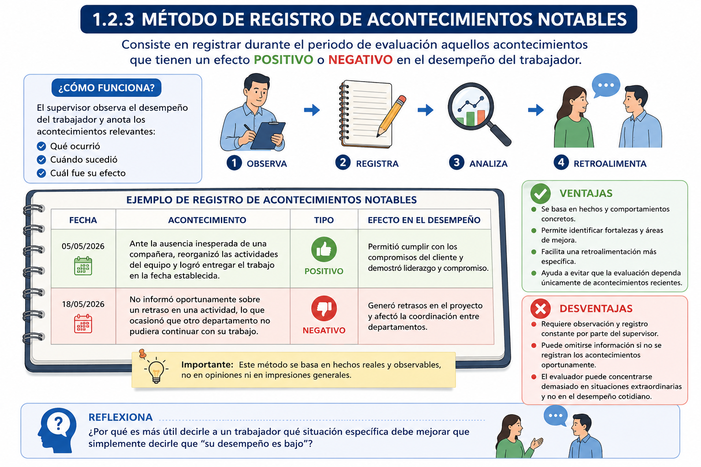
1.2.4 Escala de Calificación conductual
1.2.4 Escala de Calificación conductual
¿Qué es la escala de calificación conductual?
La escala de calificación conductual es un método de evaluación del desempeño que permite valorar al trabajador mediante conductas específicas y observables relacionadas con su puesto de trabajo.
A diferencia de una escala de puntuación general, no se limita a asignar números como 1, 2, 3, 4 o 5, sino que cada nivel de desempeño se encuentra asociado con una descripción concreta del comportamiento esperado.
¿Cómo funciona?
Primero se identifican las conductas importantes para realizar correctamente un puesto. Posteriormente, se establecen diferentes niveles de desempeño y se describe qué comportamiento corresponde a cada nivel.
Por ejemplo, para evaluar Trabajo en equipo:
5 – Excelente: Colabora activamente, apoya a sus compañeros y propone soluciones ante los problemas del equipo.
4 – Muy bueno: Mantiene una buena colaboración y participa constantemente en las actividades grupales.
3 – Adecuado: Colabora cuando se le solicita y cumple con las responsabilidades asignadas.
2 – Necesita mejorar: Participa poco y presenta dificultades para coordinarse con sus compañeros.
1 – Deficiente: Evita colaborar y su comportamiento afecta negativamente el trabajo del equipo.
Ventajas
- Se basa en comportamientos observables.
- Permite establecer criterios de evaluación más claros.
- Reduce la subjetividad del evaluador.
- Facilita explicar al trabajador por qué obtuvo determinada calificación.
- Ayuda a identificar específicamente qué conducta debe mejorar.
Desventajas
- Su elaboración requiere tiempo.
- Es necesario definir correctamente las conductas de cada puesto.
- Las escalas pueden necesitar modificaciones cuando cambian las funciones del trabajador.
Ejemplo práctico
Un supervisor evalúa el trabajo en equipo de un colaborador y observa que normalmente cumple con sus responsabilidades y colabora cuando sus compañeros se lo solicitan.
De acuerdo con la escala establecida, su comportamiento corresponde al nivel 3: Adecuado.
Esto permite que la calificación no dependa únicamente de la opinión del supervisor, sino de la comparación entre el comportamiento observado y una conducta previamente definida.
Reflexiona
¿Por qué describir conductas específicas puede hacer que una evaluación del desempeño sea más objetiva que simplemente asignar una calificación del 1 al 5?
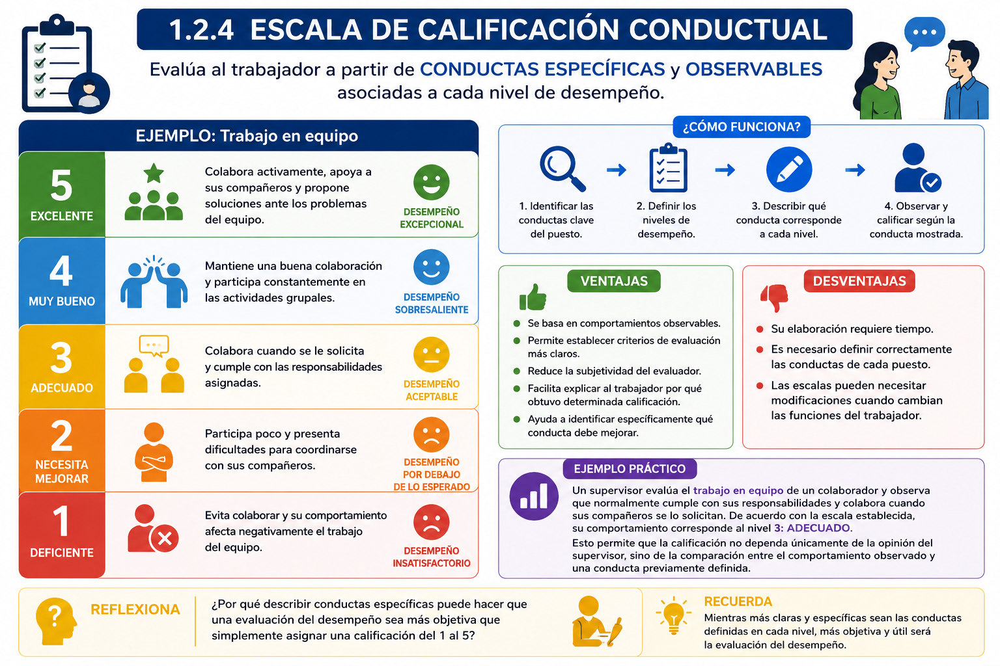
1.2.5 Métodos de verificación de campo
1.2.5 Métodos de verificación de campo
¿Qué es el método de verificación de campo?
El método de verificación de campo es una técnica de evaluación del desempeño en la que un especialista del área de Recursos Humanos trabaja conjuntamente con el supervisor inmediato para analizar y evaluar el desempeño de los trabajadores.
Su característica principal es que la evaluación no depende únicamente de la opinión del jefe. El especialista realiza preguntas, recopila información y ayuda a analizar las causas del desempeño, así como las acciones necesarias para mantenerlo o mejorarlo.
¿Cómo funciona?
Generalmente se desarrolla mediante las siguientes etapas:
1. Entrevista con el supervisor.
El especialista de Recursos Humanos obtiene información sobre el desempeño del trabajador.
2. Análisis del desempeño.
Se identifican fortalezas, dificultades, resultados y posibles causas de los problemas detectados.
3. Verificación de la información.
El especialista analiza la información junto con el supervisor para obtener una evaluación más fundamentada.
4. Plan de acción y seguimiento.
Se determinan acciones de mejora, capacitación, orientación o reconocimiento y posteriormente se revisan los resultados.
Ejemplo práctico
Un supervisor señala que un trabajador ha disminuido su productividad durante las últimas semanas.
En lugar de asignarle directamente una calificación baja, el especialista de Recursos Humanos analiza la situación con el supervisor y detecta que el trabajador no recibió capacitación suficiente para utilizar un nuevo sistema.
La evaluación permite identificar que el problema no necesariamente es falta de compromiso, sino una necesidad de capacitación. Como acción de mejora se establece un programa de entrenamiento y seguimiento.
Ventajas
- Permite realizar una evaluación más profunda.
- Ayuda a identificar las causas de un desempeño deficiente.
- Combina la experiencia del supervisor con el conocimiento técnico de Recursos Humanos.
- Facilita establecer acciones concretas de mejora.
- Favorece el seguimiento del trabajador.
Desventajas
- Requiere más tiempo que otros métodos.
- Puede resultar costoso cuando existen muchos trabajadores.
- Requiere personal especializado para realizar las entrevistas y el análisis.
- Depende de una buena comunicación entre Recursos Humanos y el supervisor.
Reflexiona
Si un trabajador presenta bajo desempeño, ¿por qué es importante investigar las causas antes de concluir que se debe a falta de compromiso?
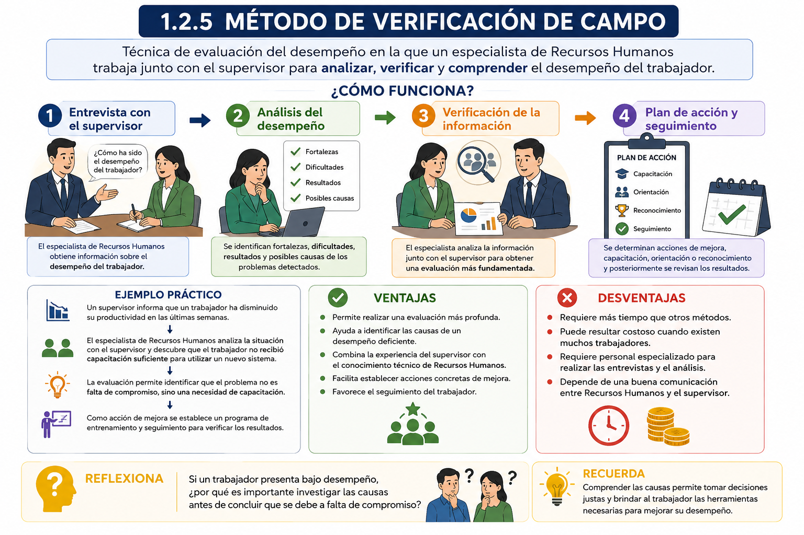
1.2.6 Enfoque de evaluación comparativa
1.2.6 Enfoque de evaluación comparativa
¿Qué es el enfoque de evaluación comparativa?
El enfoque de evaluación comparativa es un método de evaluación del desempeño que consiste en comparar el desempeño de un trabajador con el de otros colaboradores que realizan funciones similares.
A diferencia de los métodos que califican al trabajador de manera individual mediante una escala, este enfoque busca determinar la posición relativa de cada empleado dentro de un grupo.
¿Cómo funciona?
El evaluador analiza el desempeño de varios trabajadores y establece comparaciones considerando aspectos como productividad, calidad del trabajo, cumplimiento de objetivos, responsabilidad y resultados obtenidos.
Por ejemplo, si se evalúa a cinco colaboradores, el supervisor puede ordenarlos de acuerdo con su desempeño:
- Ana — desempeño sobresaliente
- Carlos — desempeño muy bueno
- Laura — desempeño satisfactorio
- José — desempeño aceptable
- Pedro — requiere mejorar
- Principales formas de evaluación comparativa
- Jerarquización: se ordena a los trabajadores del mejor al menor desempeño.
- Comparación por pares: cada trabajador se compara individualmente con los demás.
- Distribución forzada: los empleados se distribuyen en diferentes categorías de desempeño.
Ventajas: facilita identificar a los trabajadores con mayor o menor desempeño, permite establecer diferencias dentro de un grupo y puede apoyar decisiones relacionadas con promociones, reconocimientos o desarrollo.
Desventajas: puede generar competencia entre compañeros, la posición obtenida depende del desempeño del grupo y no siempre explica las causas por las que una persona tiene mejor o menor desempeño.
Ejemplo práctico: si Recursos Humanos necesita identificar a los colaboradores con mejores resultados para considerar una promoción, puede comparar a quienes ocupan puestos similares y establecer un orden de acuerdo con criterios previamente definidos.
Reflexiona:
¿Consideras justo comparar a dos trabajadores únicamente por sus resultados si las condiciones en las que realizan su trabajo son diferentes?
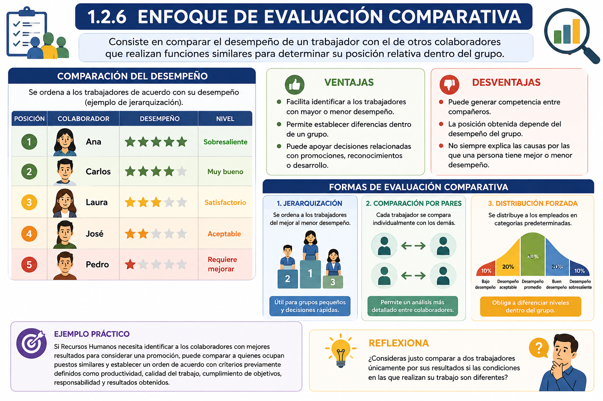
1.3 Métodos de evaluación con base en el futuro
1.3 Métodos de evaluación con base en el futuro
¿Qué son los métodos de evaluación con base en el futuro?
Los métodos de evaluación con base en el futuro se orientan al desarrollo y desempeño posterior del trabajador. A diferencia de los métodos que analizan principalmente lo que el colaborador realizó en un periodo anterior, estos métodos buscan identificar su potencial, establecer objetivos y determinar acciones que contribuyan a mejorar su desempeño futuro.
Este enfoque permite que la evaluación no se limite a determinar qué tan bien trabajó una persona, sino que también contribuya a responder preguntas como: ¿Qué puede mejorar?, ¿Qué objetivos debe alcanzar?, ¿Qué competencias necesita desarrollar? y ¿Cuál es su potencial dentro de la organización?
¿Cuál es su importancia?
Estos métodos permiten vincular la evaluación del desempeño con el desarrollo profesional del trabajador y los objetivos de la organización. La información obtenida puede utilizarse para establecer metas, identificar necesidades de capacitación, desarrollar competencias y preparar al personal para asumir nuevas responsabilidades.
Métodos que estudiaremos
1.3.1 Autoevaluación
El propio trabajador analiza su desempeño, identifica fortalezas, áreas de mejora y oportunidades de desarrollo.
1.3.2 APO – Administración por Objetivos
El desempeño se analiza a partir del cumplimiento de objetivos previamente establecidos entre el trabajador y la organización.
1.3.3 Evaluación psicológica
Busca obtener información relacionada con características, capacidades y potencial del trabajador que pueden influir en su desempeño y desarrollo profesional.
Ejemplo introductorio
Una empresa desea preparar a algunos colaboradores para ocupar puestos de supervisión en el futuro. En lugar de considerar únicamente su desempeño anterior, analiza sus objetivos, capacidades, áreas de desarrollo y potencial.
Con esta información puede establecer planes de capacitación y desarrollo para preparar a los trabajadores que podrían asumir mayores responsabilidades.
Reflexiona
¿Qué consideras más útil para desarrollar a un trabajador: conocer únicamente cómo se desempeñó en el pasado o también analizar lo que podría lograr en el futuro? ¿Por qué?
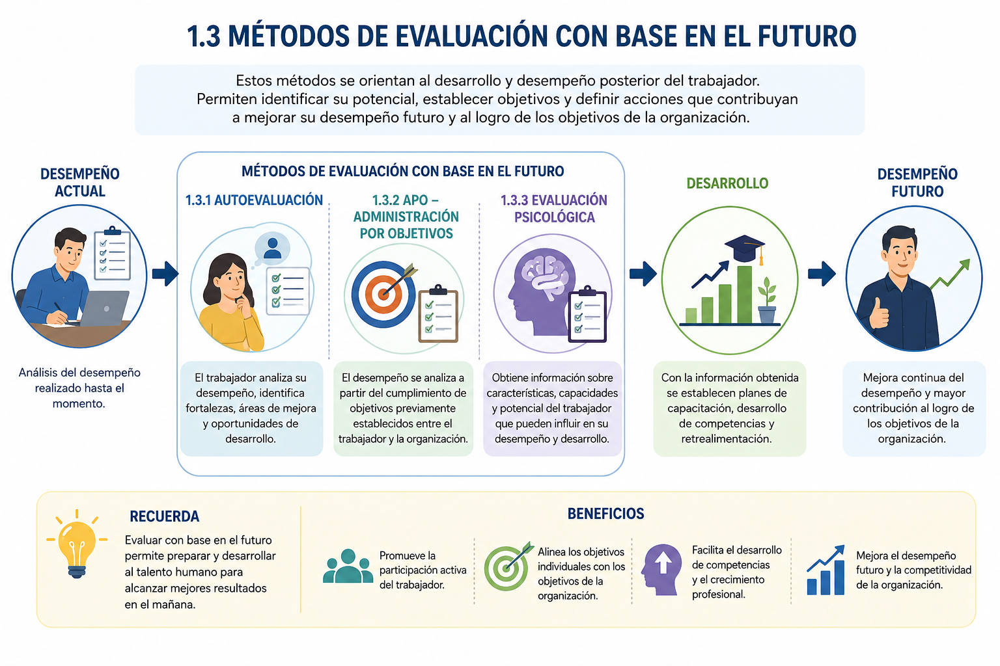
1.3.1 Autoevaluación
1.3.1 Autoevaluación
¿Qué es la autoevaluación?
La autoevaluación es un método de evaluación del desempeño en el cual el propio trabajador analiza y valora su desempeño, considerando sus resultados, capacidades, fortalezas, dificultades y áreas que necesita mejorar.
A diferencia de otros métodos donde la evaluación depende principalmente del supervisor, aquí el colaborador participa activamente en el análisis de su propio desempeño.
¿Cómo se realiza?
El trabajador puede responder un cuestionario o analizar una serie de criterios relacionados con su puesto, por ejemplo:
- ¿He cumplido los objetivos establecidos?
- ¿Cuáles considero que son mis principales fortalezas?
- ¿En qué aspectos necesito mejorar?
- ¿Qué conocimientos o habilidades necesito desarrollar?
- ¿Qué objetivos profesionales quiero alcanzar?
Posteriormente, los resultados pueden analizarse junto con el supervisor para establecer compromisos, objetivos y acciones de desarrollo.
Ejemplo práctico
Una colaboradora del departamento de Recursos Humanos realiza su autoevaluación y obtiene las siguientes conclusiones:
Fortalezas: organización, responsabilidad y cumplimiento de actividades.
Área de mejora: comunicación al presentar información ante grupos.
Necesidad de desarrollo: capacitación en comunicación y presentaciones.
Objetivo futuro: mejorar sus habilidades de exposición durante los próximos seis meses.
La autoevaluación permite que la trabajadora reconozca por sí misma una necesidad de desarrollo y participe en la definición de acciones para mejorar.
Ventajas y aspectos a considerar
Ventajas: favorece la reflexión y el autoconocimiento, incrementa la participación del trabajador, permite identificar necesidades de desarrollo y facilita el establecimiento de objetivos futuros.
Aspectos a considerar: puede existir subjetividad; algunas personas pueden calificarse demasiado alto o demasiado bajo; por ello, es conveniente complementar la autoevaluación con información del supervisor u otras evidencias del desempeño.
Importante: La autoevaluación no significa que el trabajador determine por sí solo su calificación final. Su principal valor está en hacerlo participar activamente en la identificación de fortalezas, áreas de mejora y objetivos de desarrollo.
Reflexiona
¿Crees que todas las personas son capaces de evaluar objetivamente su propio desempeño? ¿Qué factores podrían influir en la forma en que una persona se califica?
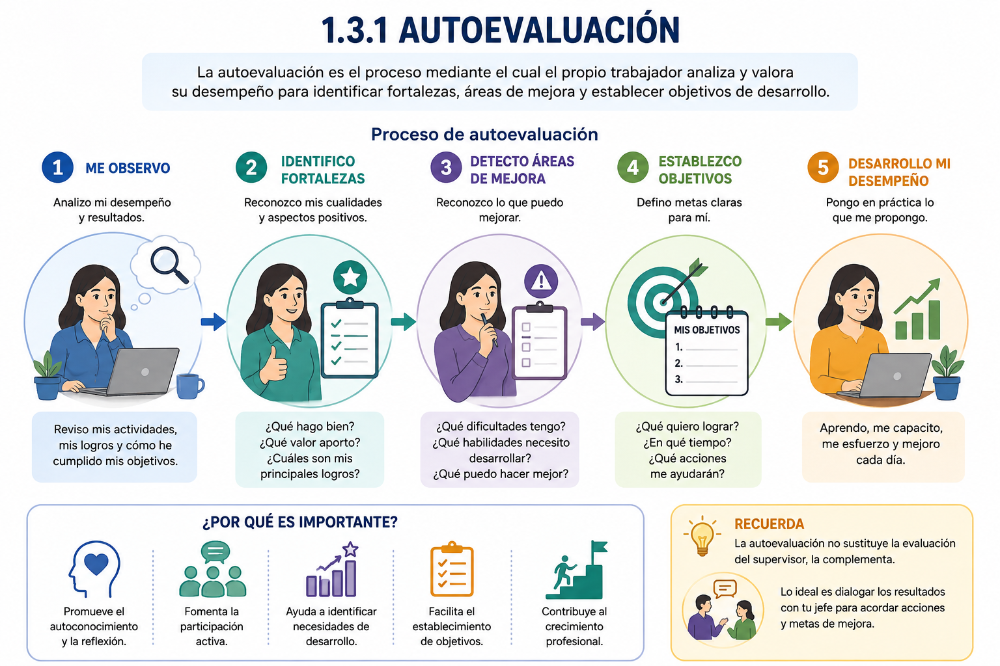
1.3.2 APO — Administración por Objetivos
1.3.2 APO — Administración por Objetivos
La Administración por Objetivos (APO) es un método de evaluación del desempeño orientado hacia el futuro, en el cual el trabajador y su superior establecen conjuntamente objetivos específicos que deberán alcanzarse durante un periodo determinado.
A diferencia de los métodos que se concentran principalmente en revisar el desempeño pasado, la APO busca establecer con claridad qué resultados se esperan en el futuro y posteriormente evaluar el grado en que fueron alcanzados.
¿Cómo funciona?
- Se establecen objetivos entre el trabajador y el supervisor.
- Los objetivos deben ser claros, específicos y medibles.
- Se determina un periodo para alcanzarlos.
- Se realiza seguimiento del avance.
- Al finalizar el periodo, se comparan los resultados obtenidos con los objetivos establecidos.
- Se proporciona retroalimentación y se establecen nuevos objetivos.
Ejemplo práctico:
Un jefe de ventas y un colaborador acuerdan como objetivo incrementar las ventas de su zona en un 10 % durante los próximos seis meses. Durante ese periodo se revisan los avances y, al finalizar, se comparan los resultados obtenidos con la meta establecida.
Ventajas: favorece la participación del trabajador, establece expectativas claras, facilita la medición de resultados y orienta el desempeño hacia las metas de la organización.
Limitaciones: puede enfocarse demasiado en resultados cuantitativos y perder efectividad cuando los objetivos son poco realistas, ambiguos o no dependen completamente del trabajador.
Reflexiona:
¿Por qué crees que un trabajador puede comprometerse más con una meta cuando participa en su establecimiento?
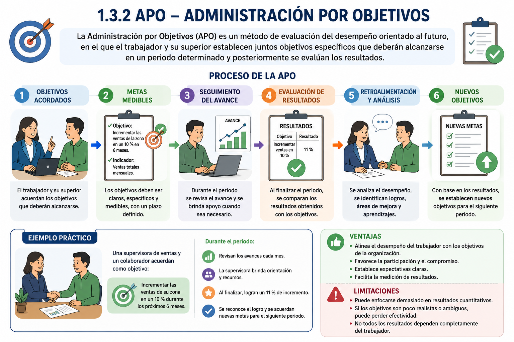
1.3.3 Evaluación psicológica
1.3.3 Evaluación psicológica
La evaluación psicológica es un método de evaluación del desempeño orientado hacia el futuro que busca identificar el potencial de desarrollo del trabajador, sus características personales y las capacidades que podrían favorecer su desempeño en puestos o responsabilidades futuras.
Generalmente es realizada por profesionales especializados, quienes pueden utilizar entrevistas, pruebas psicológicas, cuestionarios y otras técnicas de evaluación.
¿Qué aspectos puede analizar?
- Capacidad para resolver problemas y tomar decisiones.
- Habilidades de liderazgo.
- Manejo de situaciones de presión.
- Motivación y actitudes.
- Relaciones interpersonales.
- Potencial para asumir mayores responsabilidades.
Ejemplo práctico:
Una empresa considera promover a una colaboradora a un puesto de supervisión. Además de revisar su desempeño actual, realiza una evaluación psicológica para analizar aspectos como liderazgo, toma de decisiones, comunicación y manejo de conflictos, con el propósito de determinar sus posibilidades de adaptación al nuevo puesto.
Ventajas: permite conocer características que no siempre son visibles mediante los resultados laborales y ayuda a identificar necesidades de desarrollo y potencial para futuras responsabilidades.
Limitaciones: requiere personal especializado, puede implicar mayor tiempo y costo, y sus resultados deben manejarse de manera profesional, confidencial y complementarse con otras evidencias del desempeño.
Reflexiona:
¿Por qué una persona con excelente desempeño en su puesto actual no necesariamente tendrá el mismo éxito al asumir un puesto de liderazgo?
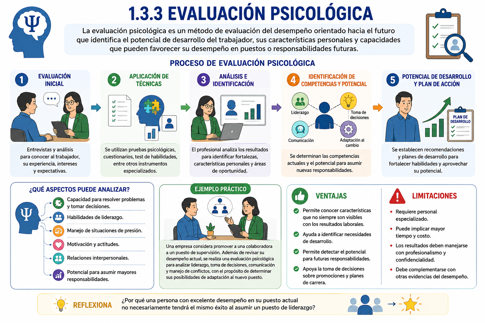
1.4 Proceso de calificación
1.4 Proceso de calificación
El proceso de calificación del desempeño es la etapa en la que se analizan los resultados obtenidos durante la evaluación y se determina el nivel de desempeño alcanzado por el trabajador, utilizando criterios previamente establecidos.
Su finalidad no es solamente asignar una puntuación, sino obtener información que permita reconocer logros, detectar áreas de mejora y tomar decisiones relacionadas con el desarrollo del personal.
Etapas del proceso de calificación
- Recopilación de información: se reúnen evidencias sobre resultados, conductas, cumplimiento de objetivos y competencias.
- Comparación con los criterios: el desempeño observado se contrasta con los estándares establecidos para el puesto.
- Asignación de la calificación: se determina el nivel alcanzado mediante una escala, por ejemplo: sobresaliente, satisfactorio, requiere mejora o insatisfactorio.
- Análisis de resultados: se identifican fortalezas, áreas de oportunidad y posibles causas de las diferencias encontradas.
- Retroalimentación: supervisor y trabajador revisan los resultados de la evaluación.
- Plan de mejora y seguimiento: se establecen compromisos, acciones de capacitación y nuevos objetivos.
Ejemplo práctico:
Una trabajadora tiene como meta atender 100 solicitudes mensuales con un nivel mínimo de 95 % de cumplimiento en calidad. Al finalizar el periodo se comparan sus resultados con esos criterios y se determina la calificación correspondiente.
Importante: la calificación debe sustentarse en evidencias y criterios objetivos, evitando que dependa únicamente de la percepción personal del evaluador.
Reflexiona:
¿Por qué una calificación puede considerarse injusta cuando el trabajador desconoce previamente los criterios con los que será evaluado?
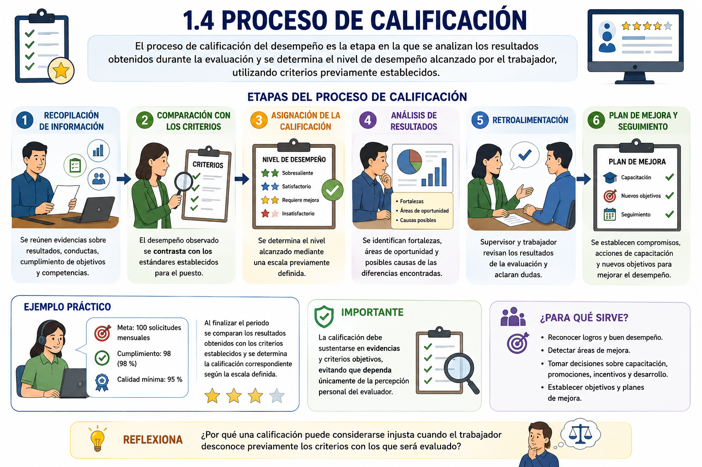
1.5 Ascensos y promociones
1.5 Ascensos y promociones
Los ascensos y promociones son decisiones de Recursos Humanos mediante las cuales un trabajador puede avanzar dentro de la organización, asumiendo mayores responsabilidades, funciones o nivel jerárquico, generalmente como resultado de su desempeño, competencias, experiencia y potencial de desarrollo.
La evaluación del desempeño aporta información relevante para estas decisiones, ya que permite identificar a los colaboradores que han demostrado resultados satisfactorios y que cuentan con las capacidades necesarias para asumir nuevas responsabilidades.
¿Qué se debe considerar para un ascenso o promoción?
- Desempeño: resultados obtenidos y cumplimiento de objetivos.
- Competencias: conocimientos, habilidades y comportamientos requeridos para el nuevo puesto.
- Experiencia: trayectoria y conocimientos adquiridos.
- Potencial: capacidad para asumir responsabilidades de mayor complejidad.
- Actitud y compromiso: disposición para aprender, colaborar y asumir nuevos retos.
- Requisitos del puesto: correspondencia entre el perfil del trabajador y las exigencias de la nueva posición.
Ejemplo práctico:
Una empresa necesita cubrir una vacante de supervisor de área. Antes de contratar externamente, Recursos Humanos analiza las evaluaciones de desempeño de sus colaboradores. Una trabajadora destaca por sus resultados, liderazgo, capacidad para resolver problemas y conocimiento del área. Después de verificar que cumple con el perfil requerido, es considerada para la promoción.
Importante: un buen desempeño en el puesto actual no garantiza automáticamente un ascenso. También debe evaluarse si la persona posee las competencias y el potencial necesarios para desempeñar adecuadamente el nuevo puesto.
Beneficios para la organización: ayuda a aprovechar el talento interno, favorece los planes de carrera, puede aumentar la motivación y facilita la cobertura de puestos con personal que ya conoce la organización.
Reflexiona:
¿Consideras que la antigüedad debe ser suficiente para otorgar un ascenso, o deberían considerarse también el desempeño, las competencias y el potencial del trabajador?
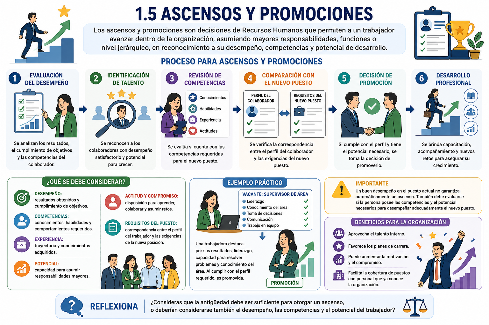
1.6 Despidos
1.6 Despidos
El despido es la terminación de la relación laboral por decisión del empleador. Dentro de Recursos Humanos, representa una de las decisiones más delicadas, ya que tiene consecuencias para el trabajador, el equipo y la propia organización.
La evaluación del desempeño puede aportar información relevante para este tipo de decisiones, especialmente cuando permite identificar de manera reiterada un incumplimiento de objetivos, bajo rendimiento o conductas laborales inadecuadas. Sin embargo, una evaluación negativa por sí sola no debería convertirse automáticamente en una decisión de despido; es necesario analizar las causas, antecedentes y circunstancias de cada caso.
¿Qué situaciones pueden llevar a considerar un despido?
Entre las situaciones que una organización puede analizar se encuentran el incumplimiento reiterado de responsabilidades, faltas o conductas contrarias a las normas internas, bajo desempeño persistente después de haber recibido orientación y oportunidades de mejora, así como otras causas relacionadas con las necesidades organizacionales.
Relación entre evaluación del desempeño y despido
La evaluación del desempeño ayuda a que las decisiones estén sustentadas en información y evidencias, en lugar de depender únicamente de percepciones personales del supervisor.
Por ejemplo, si un trabajador obtiene resultados deficientes, Recursos Humanos debe preguntarse primero:
¿El trabajador conoce claramente lo que se espera de él?
¿Recibió capacitación y retroalimentación?
¿Se establecieron oportunidades de mejora?
¿El problema depende realmente del trabajador o existen factores organizacionales que afectan su desempeño?
Esto permite distinguir entre un problema que puede corregirse mediante capacitación, acompañamiento o reasignación y una situación que podría justificar la terminación de la relación laboral.
Proceso general
Evaluación del desempeño → identificación del problema → retroalimentación → oportunidad de mejora → seguimiento → revisión de evidencias → decisión
Este proceso ayuda a evitar decisiones precipitadas y permite que Recursos Humanos actúe con mayor objetividad.
Ejemplo práctico
Un colaborador presenta durante varios periodos incumplimiento de metas. Antes de considerar su separación, el supervisor analiza sus evaluaciones, conversa con él, establece objetivos específicos de mejora y realiza seguimiento. Si después del periodo establecido el desempeño continúa siendo insuficiente, la organización puede valorar otras medidas conforme a sus políticas y a la legislación laboral aplicable.
Importante
La evaluación del desempeño no debe utilizarse como un instrumento para justificar arbitrariamente un despido. Su función es proporcionar información objetiva para la toma de decisiones y, cuando sea posible, identificar oportunidades para mejorar el desempeño.
Reflexiona
¿Consideras correcto despedir a un trabajador únicamente porque obtuvo una evaluación de desempeño baja? ¿Qué debería investigar Recursos Humanos antes de tomar esa decisión?
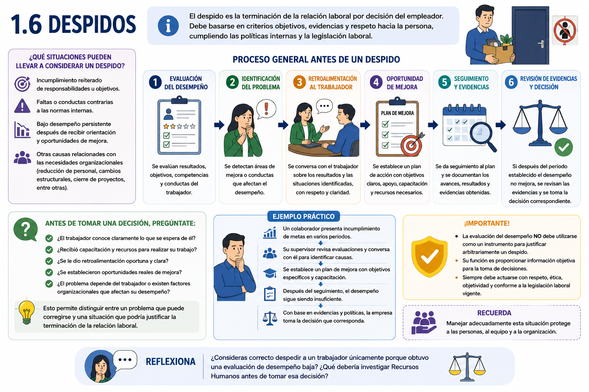
1.7 Recapacitación
1.7 Recapacitación
La recapacitación es el proceso mediante el cual una organización proporciona nuevamente formación, actualización o desarrollo de competencias a un trabajador cuando se identifica que necesita mejorar determinados conocimientos, habilidades o comportamientos para desempeñar adecuadamente su puesto.
Dentro de la evaluación del desempeño, la recapacitación representa una alternativa de mejora antes de tomar decisiones más severas. Una evaluación baja no necesariamente significa que el trabajador no tenga capacidad; puede indicar que requiere actualización, orientación o nuevas herramientas.
¿Cuándo puede ser necesaria?
Puede considerarse cuando se detectan brechas de conocimientos o habilidades, cambios en los procesos de trabajo, incorporación de nuevas tecnologías, errores recurrentes, modificación de funciones o resultados inferiores a los esperados.
Relación con la evaluación del desempeño
La evaluación permite comparar el desempeño esperado con el desempeño observado. Cuando existe una diferencia, Recursos Humanos y el supervisor deben identificar su causa.
Evaluación → detección de brecha → diagnóstico → recapacitación → aplicación en el puesto → seguimiento → nueva evaluación
Por lo tanto, la recapacitación no debe utilizarse como un castigo, sino como una estrategia de desarrollo y mejora del desempeño.
Ejemplo práctico
Un trabajador comienza a cometer errores después de que la empresa implementa un nuevo sistema digital. Su supervisor detecta el problema mediante la evaluación del desempeño. En lugar de atribuir inmediatamente los errores a falta de compromiso, la empresa determina que necesita capacitación adicional, establece un programa de actualización y posteriormente vuelve a evaluar sus resultados.
Beneficios
La recapacitación permite mejorar competencias y productividad, reducir errores, facilitar la adaptación a cambios y brindar al trabajador una oportunidad real de mejorar antes de considerar otras medidas administrativas.
Importante
Antes de recapacitar, es necesario determinar qué competencia necesita fortalecerse. Capacitar sin identificar previamente la causa del bajo desempeño puede generar tiempo y costos sin solucionar el problema.
Reflexiona
Si un trabajador presenta bajo desempeño porque no recibió la capacitación suficien
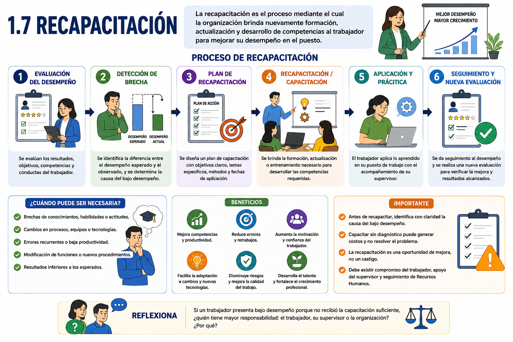
te, ¿Quién tiene mayor responsabilidad: el trabajador, su supervisor o la organización? ¿Por qué?1.8 Liquidaciones
1.8 Liquidaciones
La liquidación laboral es el pago de las cantidades y prestaciones que correspondan al trabajador cuando termina la relación laboral, de acuerdo con la causa de la terminación y con la legislación aplicable. Es importante distinguirla del finiquito, ya que no toda separación laboral genera una liquidación.
Diferencia entre finiquito y liquidación
El finiquito comprende cantidades que ya se generaron durante la relación laboral y están pendientes de cubrir, por ejemplo, salarios pendientes y partes proporcionales de determinadas prestaciones.
La liquidación, en cambio, puede incluir una indemnización cuando la causa de terminación de la relación laboral así lo establece. Por ello, Recursos Humanos debe analizar cada caso antes de determinar los conceptos correspondientes.
Relación con Recursos Humanos
Cuando ocurre una separación, el área de Recursos Humanos debe verificar la causa de terminación, revisar el expediente laboral, identificar los conceptos pendientes, realizar o coordinar los cálculos correspondientes y documentar adecuadamente el proceso.
Podemos representarlo así:
Terminación laboral → identificación de la causa → revisión del expediente → determinación de conceptos → cálculo → revisión → pago y documentación
Ejemplo práctico
Una empresa termina la relación laboral con un trabajador. Antes de efectuar cualquier pago, Recursos Humanos revisa por qué terminó la relación laboral, qué prestaciones se encuentran pendientes y cuáles son los conceptos que legalmente corresponden. Posteriormente se realiza el cálculo y se formaliza la separación.
Importante
Finiquito y liquidación no son sinónimos. Los conceptos y cantidades que correspondan dependen de la causa de terminación y de la legislación laboral aplicable. Por ello, no debe utilizarse una misma fórmula para todos los trabajadores.
Reflexiona
¿Por qué consideras importante que Recursos Humanos explique claramente al trabajador cada concepto incluido en su pago al finalizar la relación laboral?
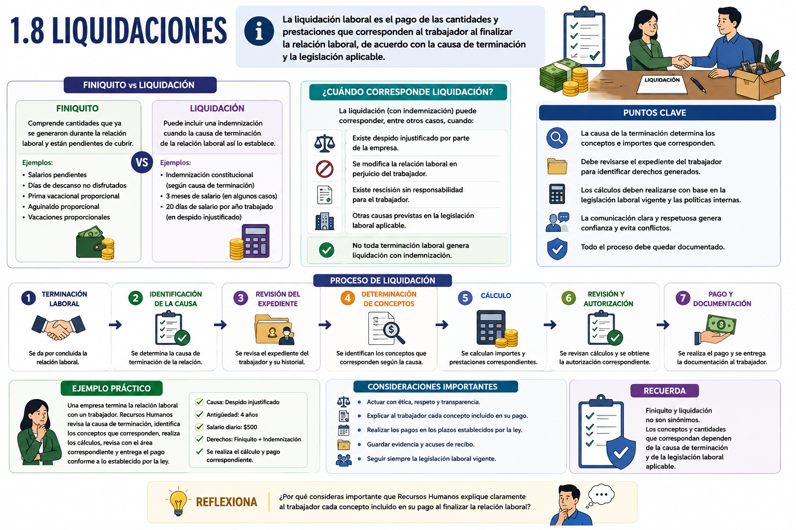
1.9 Reubicación
1.9 Reubicación
La reubicación laboral consiste en trasladar a un trabajador a otro puesto, área, función o ubicación dentro de la organización cuando se considera que sus competencias, capacidades o circunstancias pueden aprovecharse mejor en una posición diferente.
En el contexto de la evaluación del desempeño, la reubicación puede ser una alternativa cuando se identifica que el trabajador no obtiene los resultados esperados en su puesto actual, pero posee conocimientos, habilidades o experiencia que pueden ser valiosos para otra función.
¿Cuándo puede considerarse una reubicación?
Puede analizarse cuando existe una falta de adecuación entre las competencias del trabajador y las exigencias del puesto; cuando se presentan cambios en la estructura organizacional; cuando desaparecen o se modifican determinadas funciones; o cuando se identifica que el colaborador podría tener un mejor desempeño en otra posición.
Relación con la evaluación del desempeño
La evaluación proporciona información para identificar fortalezas, áreas de mejora, competencias y potencial. Estos datos ayudan a Recursos Humanos a determinar si el problema se encuentra en el desempeño general del trabajador o en la compatibilidad entre la persona y el puesto.
El proceso puede representarse así:
Evaluación del desempeño → identificación de fortalezas y brechas → análisis del perfil → búsqueda de alternativas → reubicación → adaptación → seguimiento y nueva evaluación
Ejemplo práctico
Un trabajador presenta dificultades constantes en un puesto que requiere atención directa al cliente, pero demuestra excelentes capacidades para organizar información, elaborar reportes y controlar documentación. Después de analizar su evaluación y perfil, Recursos Humanos identifica una vacante administrativa más compatible con sus fortalezas y considera su reubicación.
Beneficios de una reubicación adecuada
Una reubicación bien analizada puede permitir aprovechar el talento existente, reducir la rotación, mejorar el desempeño, aumentar la satisfacción laboral y evitar la pérdida de trabajadores que podrían aportar valor en otra posición.
Importante
La reubicación no debe utilizarse como castigo. Debe analizarse la compatibilidad entre las competencias del trabajador y las características del nuevo puesto, además de considerar las condiciones laborales y disposiciones aplicables.
Reflexiona
Si un trabajador tiene bajo desempeño en un puesto, pero demuestra excelentes habilidades para otra función, ¿consideras más conveniente despedirlo o analizar primero una posible reubicación? ¿Por qué?
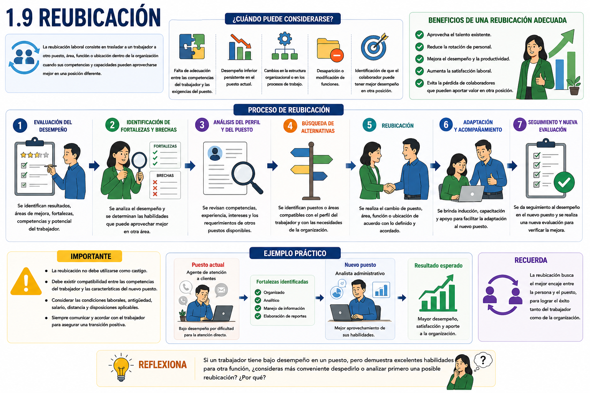